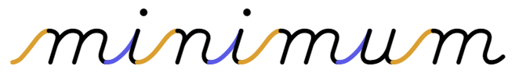

Cogncur Documentation - Typeface Features
This guide explains what the Cogncur font family looks like, and gives you a glimpse into why it was designed that way.
In this guide you'll find the following topics:
Loops and sticks
The letters b, h, l, and k have a tall loop. The letters g, j, and y have a low loop. Tall loops intersect themselves exactly on the waist line (sometimes call 'midline'). Low loops
intersect themselves on the baseline. Tall and low loops are rotationally symmetrical images of each other.
Cogncur: loops intersect themselves at the waist line or at the baseline
All loops have a long, straight downstroke, that is parallel to other downstrokes, such as those in the legs of the letter m.
Cogncur: loops have a straight downstroke that is parallel to other downstrokes
The letters d and p do not have a loop but a stick. The length of the sticks can be shortened with stylistic set ss03.
dip
Cogncur: d and p (default)
dip
Cogncur: d and p (variant)
The letters f and q have a low, forward loop. However, the font also provides variants of these letters without a loop. [TODO: see Customization guide]
quaff
Cogncur: f and q (default)
f
Cogncur: variants of f
qu u u u u
Cogncur: variants of q
The letter z does not have a loop.
(Almost) no pencil lifts for lowercase
All lowercase letters except i, j, and x are written without lifting the pen.
a b c d e f g h i j k l m
n o p q r s t u v w x y z
A more print-like t is also available through stylistic set ss08.
toot
Cogncur: t (default)
toot
Cogncur: t (variant)
Teaching tip: lowercase cursive is exemplary cursive. It avoids pencil lifts, and to do so, the student must often trace the pen 'back' over a previous stroke. Uppercase cursive contains more pencil lifts, more unique elements, and more 'inconsistencies' than lowercase cursive. Teach lowercase cursive before uppercase.
Arches
The arch is the shape that occurs in the body of the letters n and u, and is one of the defining features that characterizes a font. Arches in Cogncur are asymmetrical and their height is 1.618 times the distance between their legs. Arches are written without lifting the pen. In the case of n, the pen traces back up over the first leg and then 'branches out' into the arch. Although somewhat obscured by the thickness of the stroke, in Cogncur this 'branching out' point is located exactly halfway between the baseline and the waistline. Likewise, the letter u has a 'branching in' point which is also located halfway between the baseline and the waistline.
Other lowercase letters also contain arches. In Cogncur, the width of the arch does not change for wide letters such as m and w. The letter m is therefore twice as wide as the letter n. Note that the letter w contains only a single arch; the third 'leg' has no straight segment, but is simply the same curved upstroke that is also found in the letters b and v.
n m h u w
Cogncur: letters with arches
Teardrop counters
In the German and American cursive tradition, the counters of the letters a, d, g, and q have a round shape, just like in print. This is problematic in handwriting, not just because shapes with lots of symmetry can be hard to get exactly right, but also because a circle or oval does not have a defined starting point and can just as easily be written clockwise as anticlockwise.
In italic handwriting, counters typically start from the waist line, resulting in a lopsided 'teardrop' shape. This has clear advantages for learners: the teardrop has a clearly defined starting point - on the waist line - and it's impossible to accidentally continue the clockwise entry stroke (or connecting stroke) through the intended starting point of the counter. This is why Cogncur fonts use the italic style 'teardrop' counters.
Cogncur: the (nearly) straight angles in the teardrop counters
remind students to 'turn back' and move the pen counterclockwise
D'Nealian: the round shape of the counter
allows an incorrect clockwise construction
The letter p contains a version of the teardrop counter that is rotated by 180°. There is also a variant of p that doesn't have a counter but an open arch (stylistic set ss16), and variants that start with a curve (ss15).
d p
Cogncur: d and p (default)
Cogncur: p (variants)
Counters have a 'branching in' point (a, d, g, and q) or a 'branching out' point (p) just like arches do. These points are located halfway between the baseline and the waist line, just like with the arches.
Cogncur: counters branch out and in just like arches
Ellipses (c, e, o)
In Cogncur, the letters c and e are based on the same ellipse as the letter o. This ellipse has the same height/width ratio - 1.618 - as the arches discussed earlier. A line can be drawn through the highest and lowest point of an ellipse to visualize its slant. Cogncur takes care to ensure that ellipses are parallel to each other and to other letters.
Cogncur: e and c are derived from the letter o.
The slant of these ellipses can be found by
drawing a line through the highest and lowest points.
Zaner-Bloser: the letter e is not based on
an ellipse, but has a straight back, like l.
Luna: o and e are neither parallel
to each other, nor to other letters
.
Teaching tip: the letter c is often used to teach students where to start the counterclockwise stroke of the letters a, d, g, and q. Please be mindful of the fact that in Cogncur, the counterclockwise stroke of c starts below the waist line, but the counterclockwise stroke of a and other 'teardrop' letters starts on the waist line.
Joins
Joins are the strokes that connect letters together. Cogncur follows the German tradition in which joins from the baseline (that is all joins except those coming from the letters b, o, t, v, and w) contain a long, straight, diagonal segment. These straight segments transition into the letter using tight curves.
Cogncur: joins have a straight, diagonal segment. Some letter start with a tight curve
against the waist line, while other letters start with a sharp angle against the waist line.

D'Nealian: in traditional American cursive typefaces, joins are curved throughout.
Joins are divided into undercurves (orange) and overcurves (blue).
Tight curves lead to narrower letter spacing in general, but also to less unevenness in letter spacing between letters that start with a curve and letters that start with an angle.
Cogncur (top) vs D'Nealian (bottom): if we make the joins invisible, we can see the letter spacing.
Cogncur's letter spacing is narrower and more even than D'Nealian's.
Another reason why the joins in Cogncur have been designed with tight curves, is that these tight curves do not resemble the wide curves of the arches found in the letters, especially in the letter u. This helps the letters 'stand out' from the joins and makes it easier for learners to see clearly where a letter begins and ends.
Zaner-Bloser: the text u ii uw in cursive. The undercurves inside the letters u and w look similar
to the undercurves used to join the letters.
If you use the print-like variant of t (using stylistic set ss08), Cogncur's straight joins would result in an awkward obtuse angle or a pencil lift. Therefore, before the print-like t Cogncur uses a curved join. It is possible but not recommended to also use these curved joins before the letters i, u, and w with stylistic set ss12.
tt
Cogncur: a curved join is
used before print-like t.
quit
Cogncur: it is possible to also use curved
joins before the letters i, u, and w.
The 'straight' joins in Cogncur are not always parallel, like they were in the word minimum. Joins towards the letters e and s tend to have a smaller slope than other joins. This is necessary to achieve correct and even letter spacing.
Cogncur: joins are not parallel.
Joins towards e and s have a smaller slope.
The letters b, o, v, and w end on or near the waist line. After these letters, Cogncur uses curved joins that dip a little bit below the waist line.
bovine
Cogncur: joins from b, o, v, and w
dip a little bit below the waist line.
Learning curve: joins from b, o, v, and w dip
far below the waistline, more than halfway
towards the baseline.
Getty-Dubay: joins from o, v, and w
are horizontal strokes along the waist line.
Teaching tip: the counterclockwise stroke of the letter o needs to start a little bit beyond the 'top' of the letter and below the waist line, in the same place as the letter c. The join also starts from the same point below the waist line. Starting on the waist line would result in a join that can't dip without creating an open loop (as in the Learning Curve sample) or needing to make awkward changes from concave to convex.
The standard version of the letter t ends halfway between the baseline and the waist line. After this letter, Cogncur also uses curved joins.
tithe
Cogncur: joins from t are also curved.
Uppercase
Uppercase letters in Cogncur are intended as initials: to be used only at the beginning of the word. Uppercase letters can not connect to each other. All uppercase letters in Cogncur are visually connected to the next lowercase letter, but for some letters a pencil lift is used to move the pencil to the start of the join.
Aa Cc Ee Gg Hh
Jj Kk Ll Mm Qq
Rr Uu Xx Yy Zz
Cogncur: uppercase letter that join to the next lowercase
letter with a continuous stroke
Bb Dd Ff Ii
Nn Oo Pp Ss
Tt Vv Ww
Cogncur: uppercase letters that join to the next
lowercase letter with a pencil lift
There is a lot of variation in uppercase cursive between countries, to the point that some letters are not legible for an international audience. Cogncur uses uppercase forms that are pretty similar to print capitals. However, some uppercase letters can be customized through stylistic sets ss19 and ss20.
Cogncur: uppercase letters (default)
Cogncur: uppercase letters (variants)
Multilingual support
Cogncur contains accented characters with the accents grave, acute, circumflex, tilde, dieresis, macron, breve, and caron over both lower- and uppercase vowels.
| à |
á |
â |
ã |
ä |
ā |
ă |
ǎ |
å |
À |
Á |
 |
à |
Ä |
Ā |
Ă |
Å |
| è |
é |
ê |
ẽ |
ë |
ē |
ĕ |
ě |
|
È |
É |
Ê |
|
Ë |
Ē |
Ĕ |
|
| ì |
í |
î |
ĩ |
ï |
ī |
ĭ |
ǐ |
|
Ì |
Í |
Î |
|
Ï |
Ī |
Ĭ |
|
| ò |
ó |
ô |
õ |
ö |
ō |
ŏ |
ǒ |
|
Ò |
Ó |
Ô |
Õ |
Ö |
Ō |
Ŏ |
|
| ù |
ú |
û |
ũ |
ü |
ū |
ŭ |
ǔ |
ů |
Ù |
Ú |
Û |
Ũ |
Ü |
Ū |
Ŭ |
Ů |
| ỳ |
ý |
ŷ |
ỹ |
ÿ |
ȳ |
|
|
|
|
Ý |
Ŷ |
|
Ÿ |
|
|
|
Additionally, some accented consonants and digraphs are also available:
| æ |
ç |
ñ |
ø |
œ |
š |
ž |
ß |
Æ |
Ç |
Ñ |
Ø |
Π|
Š |
Ž |
Note that accented uppercase letters stick out above the normal line height. If no extra line height is reserved, these accents may overlap the previous line or be cut off.
If standard ligatures are enabled, the breve and macron accents combine over the double lowercase vowels aa, ee, oo, and uu. ēē becomes ēē, ĕĕ becomes ĕĕ, ōō becomes ōō etc.
If your document language is set to Dutch, ij is replaced with ij and IJ is replaced with IJ.
The
The Insert Symbol dialog in Microsoft Word will show the letters in their raw form without entry or exit strokes. As a result, the letter e may look like this: e. Don't worry, after you insert the letter it will look normal (provided that you've configured Microsoft Word to use contextual alternates). The Insert Symbol dialog will also allow you to scroll down to various partially connected forms of letters in the 'Private Use Area'. Do not insert letters from the 'Private Use Area' as they will not form correct connections to other letters.
Your word processor or publishing application may compose additional accented characters that are not present (pre-composed) in the font. Unfortunately, application-composed characters will not connect correctly to other characters.
Numerals
By default, numbers in Cogncur all have the same height, but not all the same width. This tends to give good result when numbers are mixed with text. If you prefer, you can change the Number forms to 'Old-style'. Old-style numbers are smaller and do not all have the same height.
March 19, 2016.
Cogncur: numbers (default style)
March 19, 2016.
Cogncur: numbers (old-style)
Microsoft Word: changing the number style
You can also change the Number spacing to 'Tabular'. Tabular numbers are useful if you want numbers to line up with each other. However, if you enable Tabular numbers in Cogncur, this does not just effect the width of then numbers, but also the width of the space character and the width of the comma and the period. Because of these changes to word space and interpunction, tabular numbers should only be used for specific parts of your document that need it, and should not be used on normal text.
$29.95
$ 1.50
Default numbers do not line up
$29.95
$ 1.50
Tabular numbers line up
Oops, tabular numbers
messed up my text.
Tabular numbers should not be enabled for normal text.
[TODO] See the Customization guide for available variants of numerals.